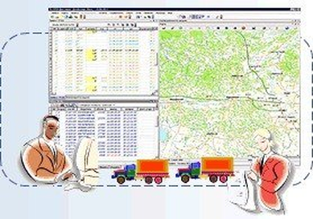
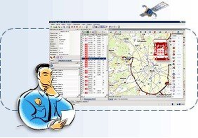

СИТИ-Доставка. Маршрутизация в мегаполисе
СИТИ-Доставка/ЭРМА СОФТ — ГИС-платформа для планирования ежедневных рейсов доставки продукции клиентам в регионе и контроля за их исполнением.
Планирование количества машин, маршрутов, времени прибытия
Рациональное планирование загрузки каждого автомобиля
Создание маршрутных листов и сводных накладных
Мониторинг транспортных средств онлайн через GPS
Контроль исполнения рейсов в реальном времени

Регистрационные данные
СИТИ-Доставка НП. Доставка нефтепродуктов
Специализированная версия СИТИ-Доставка для планирования и контроля доставки нефтепродуктов, учитывающая специфику перевозки опасных грузов.
Управление и мониторинг транспортными средствами при перевозке опасных грузов
Учёт требований к маршрутам перевозки опасных грузов
Специализированные форматы отчётности
СИТИ-Инкассация. Управление инкассацией
Программно-информационный комплекс для прогнозирования остатков наличности, планирования маршрутов и мониторинга инкассации денежных средств.
Прогнозирование остатков наличности в торговых точках
Оптимальное планирование маршрутов инкассаторских бригад
Онлайн-мониторинг передвижения инкассаторских автомобилей
Контроль исполнения инкассационных маршрутов
ПФК-Логистика. Междугородние перевозки
Комплексное решение для автоматизации процессов межрегиональной транспортной логистики.
Планирование маршрутов межрегиональных перевозок
Расчёт временных графиков и стоимости перевозок
Отслеживание грузов в режиме реального времени
ГеоМониторинг. Анализ и контроль ТС
ГеоМониторинг — программно-информационная система для контроля мобильных объектов с использованием навигационного оборудования.
Основные задачи:
Формирование и получение плановых маршрутов из СИТИ-Доставка
Получение фактических данных о состоянии ТС от приборов GPS
Анализ — сопоставление плановых и фактических данных
Оперативное отслеживание транспорта и выявление внештатных ситуаций
Контроль датчиков: расход топлива, температура, открытие дверей
Определение отклонений от графика, превышений по пробегу
Подготовка отчётных документов

Для задач контроля мобильных объектов используется надёжное оборудование российских производителей. На транспортном средстве устанавливаются необходимые датчики и расходомеры, информация от которых передаётся пользователю в виде специальных сигналов, графиков, отчётов.
СИТИ-Трейд. Управление торговыми представителями
Специализированный модуль для управления сетью торговых представителей с GPS-мониторингом.
Ведение БД «Клиенты» и «Зоны ответственности агентов»
Планирование и анализ работы агентов
GPS-мониторинг выполнения плановых маршрутов
Мобильные сервисы
Мобильные клиентские приложения для работы в полевых условиях — iOS и Android.
Просмотр картографических данных на мобильном устройстве
Регистрация заявок и событий прямо с места
GPS-навигация по плановым маршрутам
Синхронизация данных с центральной системой
Комплексная автоматизация
ЭРМА СОФТ разрабатывает комплексные решения, объединяющие несколько программно-функциональных систем в единый информационный контур предприятия.
Интеграция СИТИ-Доставка + ГеоМониторинг + СИТИ-Трейд
Единый интерфейс управления всеми транспортными процессами
Интеграция с корпоративными ERP и CRM системами
Техническая поддержка
ЭРМА СОФТ обеспечивает полный цикл технической поддержки внедрённых транспортно-логистических систем.
Актуализация картографического обеспечения систем
Обновление и техническое обслуживание ПО
Обучение операторов и диспетчеров системы
Вопрос специалисту ЭРМА СОФТ
Расскажите о задаче — подготовим демонстрацию и коммерческое предложение за 3 рабочих дня